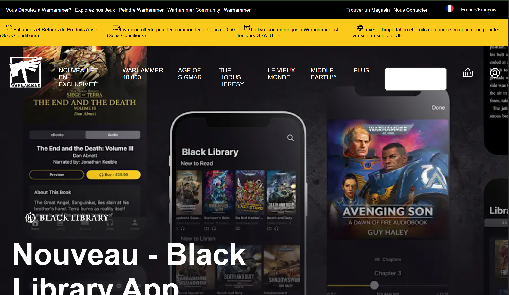
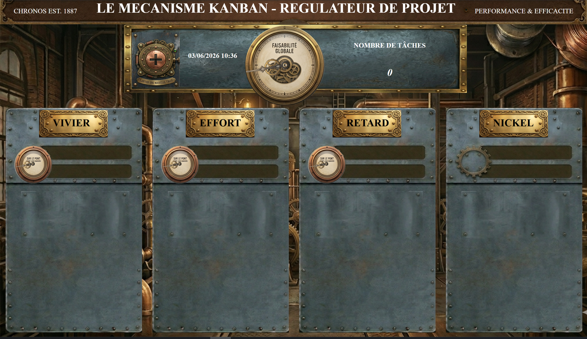
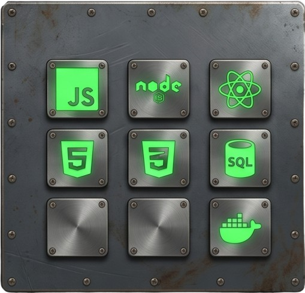

MAQUETTE SITE WARHAMMER
Maquette, reproduction d'un site web, projet purement Front-End, exercice d'infrastructure HTML5 et d'intégration du style en CSS3 vanilla.
10 ans d'expertise opérationnelle et de troubleshooting, transposés dans l'ingénierie logicielle

Maquette, reproduction d'un site web, projet purement Front-End, exercice d'infrastructure HTML5 et d'intégration du style en CSS3 vanilla.

Application de gestion des tâches dynamique avec calcul de charge géométrique et persistance des données via le LocalStorage
Après 10 ans passés à piloter la performance de réseaux de points de vente et à diagnostiquer des pannes techniques complexes, j'ai choisi de transposer cette rigueur analytique vers le développement logiciel. Mon approche repose sur une double culture : l'efficacité opérationnelle acquise sur le terrain et la maîtrise technique de l'écosystème JavaScript moderne. Axé sur la stack Full-Stack (JavaScript, Node.js, Express, React, SQL), je conçois des applications structurées, performantes et centrées sur la résolution de problématiques métiers claires. Actuellement en formation intensive pour l'obtention du Titre Professionnel Développeur Web et Web Mobile (Bac+2), je suis activement à la recherche d'un stage de 2 mois (de septembre à novembre 2026) dans la région toulonnaise pour intégrer une équipe technique et apporter une valeur opérationnelle immédiate. Stack technique : JavaScript (ES6+), Node.js, Express, React, PostgreSQL, MySQL, Git/GitHub, LocalStorage.
